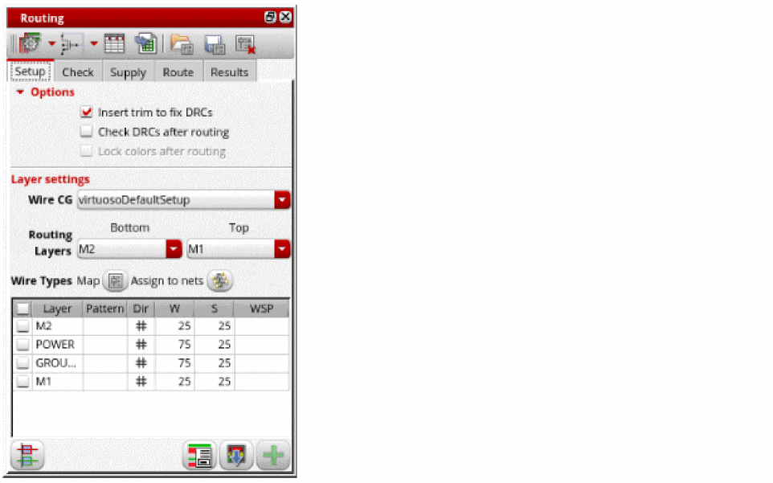
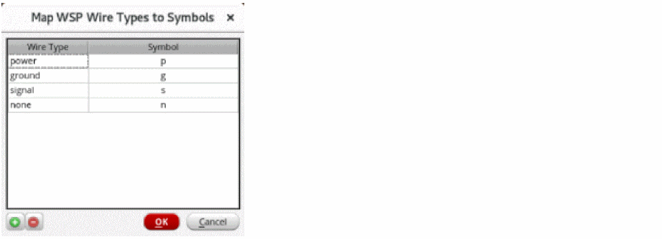
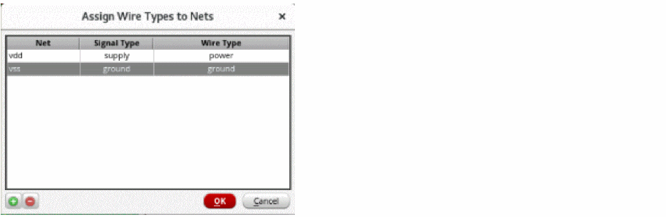

Configuring Device-Level Router Settings
Before routing a design, you need to configure the routing options in the Routing assistant for device-level routing. To configure router settings:
- Open a design in Layout MXL.
-
Choose Window – Assistants – Routing.
Alternatively, right-click anywhere on the layout window menu bar and choose Assistants – Routing.
The Setup tab of the Routing assistant is displayed.
 - Select Insert trim to fix DRCs to insert trims to devices automatically to fix DRC errors.
- Select Check DRCs after routing to automatically run DRC checks after routing.
- Select a wire constraint group from the Wire CG drop-down list.
- Choose the bottom and top routing layer from the Bottom and Top drop-down lists. Specifying valid routing layers updates the WSPs visible in the table and specifies which layers the router should use for routing.
-
Click Wire Types Map
. The Map WSP Wire Types to Symbols form is displayed. This form is used to display the wire type and their symbols and also lets you create your own custom wire type and their symbol.
 -
Click Assign to Nets
. It opens the Assign Wire Types to Nets form with a table that assigns wireTypes to nets.
 - Select the layers for which you want to configure the router settings. You can either select all layers or one or more of them.
- Once the router settings are configured, you can generate width spacing patterns (WSPs).
Related Topics
Configuring Device-Level Router Settings
Generating Width Spacing Patterns for Device-level Routing
Return to top